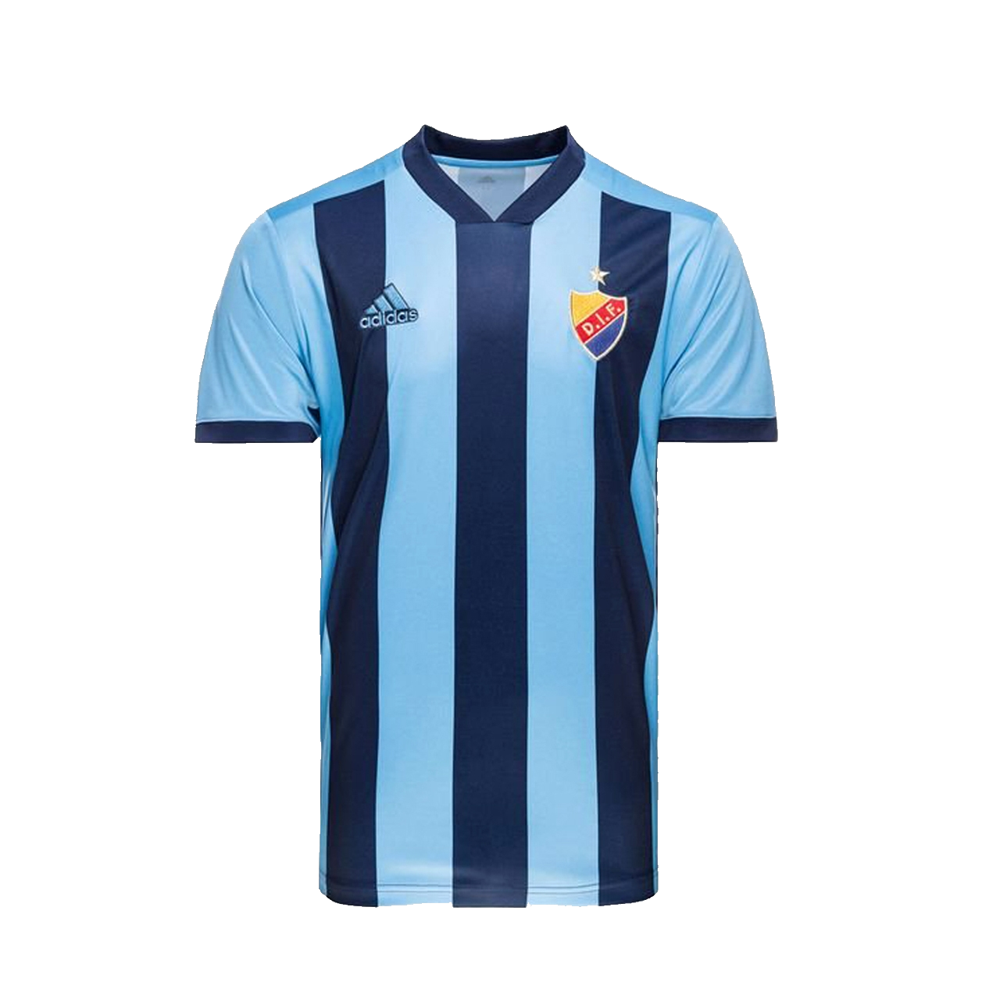

Rivalitet
Djurgårdens största rivaler är AIK & Hammarby.
Detta för att likt Djurgården så är AIK & Hammarby klubbar som är grundade i Stockholm.
Matcher mot AIK brukar kallas för tvillingderbyt, detta för att AIK och Djurgården båda är grundade året 1891. Matcher mellan AIK och Djurgården är väldigt hetsiga och det bjuds ofta upp på hårt spel på planen och mycket hög kvalitet på fansen
Matcher mot Hammarby är "nummer 2" derbyt. Det är ett derby fast inte lika stort som AIK - DIF. Matcher och fans är likadant som mellan AIK - DIF. Under de senaste åren så har derbyna mellan DIF- HIF Blivit mer hetsiga då båda lagen spelar på Tele 2 Arena. Detta gör så att derbyna mellan DIF - HIF ofta blir en kamp om vem som äger arenan.
